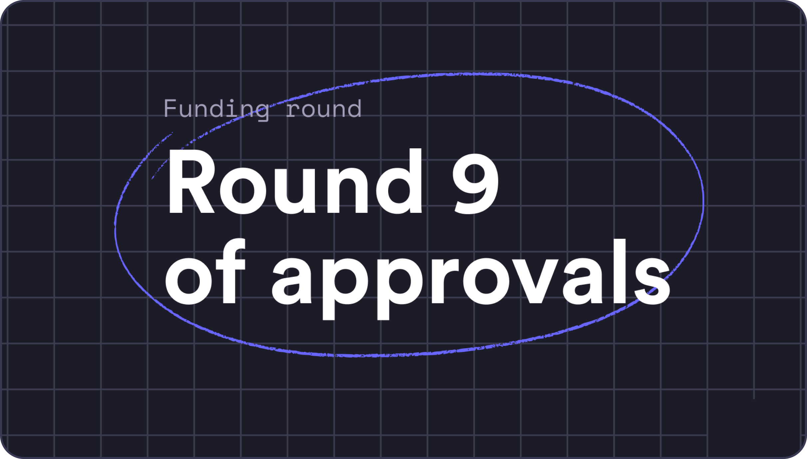

This is an image caption
Hi Everyone!
Excited to share another round of funding approved by the Committee! For Round 6, we have 5
grantees with a total of $246,000.00 in DYDX funding. Check out the table below for more
information on each grant.
We’re also happy to share that the Committee revamp is close to getting finalized. This revamp
will enable payments to be complete by the Grants multisig. The team is working on the final
documentation and will share everything with the community as soon as its ready. We’re excited
to finally start paying our Grantees to really get things going!
Centralization lets you make decisions quickly
We’re also happy to share that the Committee revamp is close to
getting finalized. This revamp will enable payments to be
complete by the Grants multisig. The team is working on the
final documentation and will share everything with the
community as soon as its ready. We’re excited to finally
start paying our Grantees to really get things going!
Centralization lets you make
decisions quickly
We’re also happy to share that the Committee revamp is close to
getting finalized. This revamp will enable payments to be
complete by the Grants multisig. The team is working on the
final documentation and will share everything with the
community as soon as its ready. We’re excited to finally
start paying our Grantees to really get things going!
We’re also happy to share that the Committee revamp is close to
getting finalized. This revamp will enable payments to be
complete by the Grants multisig. The team is working on the
final documentation and will share everything with the
community as soon as its ready. We’re excited to finally
start paying our Grantees to really get things going!
The more realistic an experience we provide, the more real
feedback we can get. With a more static mockup, or broad-line
prototype, or a rich prototype with placeholder data, you tend
to get more hypothetical feedback.Creighton Abrams